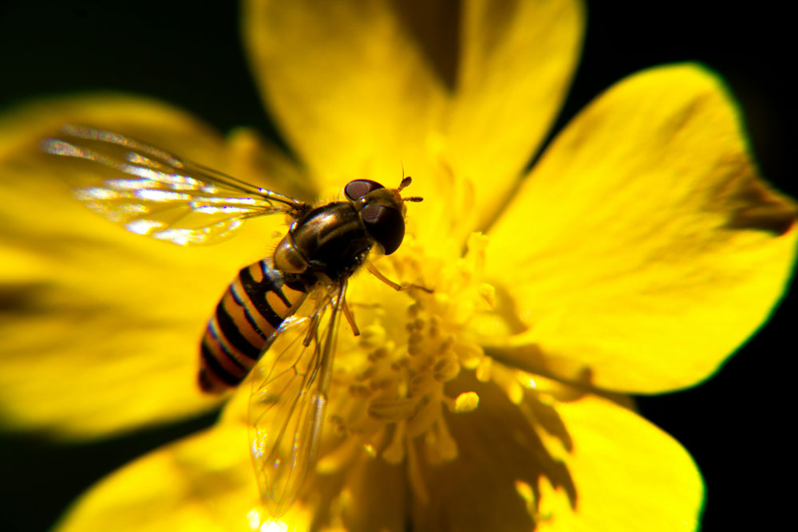
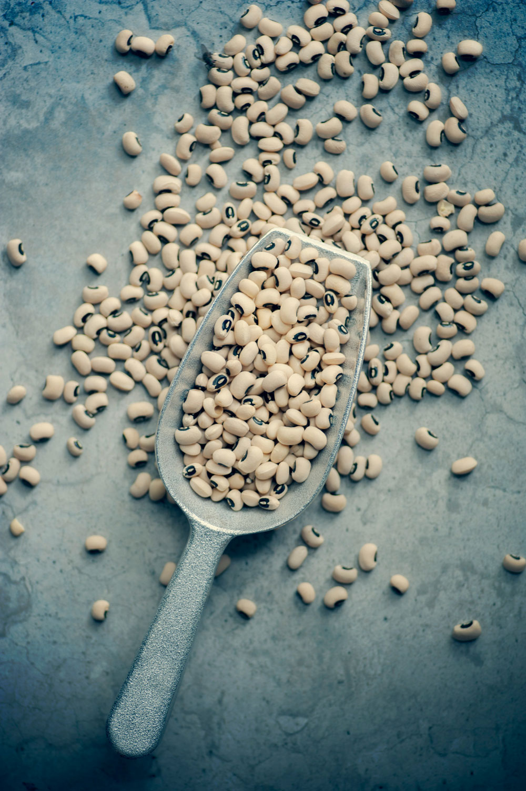

02/06
2024
Husstandens
klimaplan

Hvordan laver man en klimaplan for sin husstand?
Kom med til foredrag ved Jacob Antvorskov fra 2030 Klimafamilie. Han medbringer en 31 år gammel skistøvle, en iPhone fra skuffen, en grim plastlanterne og en masse eksempler fra sin husstand.
Undervejs får du inspiration til helt at undgå engangsting, købe alting brugt og reparere og sælge det igen og meget mere!
18/06
2024
Den
dyriske time

Vær med til tankevækkende foredrag om biodiversitet ved naturformidler, biolog og vært af Den Dyriske Time podcast, Alexander Holm.
Der bliver inviteret til en inddragende samtale omkring hvad biodiversitet egentlig er for en størrelse, og hvordan vi mærker den.
22/06
2024
Håb for
fremtiden?

Klimadebatten raser og alle ved der skal gøres noget nu, hvis vi skal nå i mål. Forbrugsadfærden spås til at ændre sig radikalt, og der går derfor ikke lang tid før virksomheder skal til at aflægge et grønt regnskab, hvis de skal overleve, Hvorfor er det så svært og hvad skal der gøres konkret?
Rasmus Willig er sociolog og forfatter, og med sit kritiske blik vil han komme med løsninger på hvordan vi accelererer den grønne omstilling.
30/06
2024
Linse, bønne,
ært?

Vi skal spise flere bælgfrugter, men kun lidt over halvdelen af danskerne kender til kikærter, kidneybønner og linser.
Tænketanken Frej inviterer derfor til bælgfrugtsbingo og bælgoskop for at hjælpe danskerne med at lære mere om den sunde og klimavenlige fødevare!
Kom med til to kreative og legende workshop, der vækker dine sanser og giver inspiration til klimavenlig kost